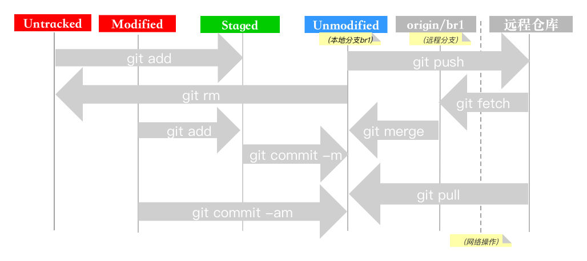

版本管理软件历史
- 本地版本管理
- 集中式版本管理
- CVS
- SVN
- 分布式版本管理
本地版本管理

集中式版本管理

分布式版本管理

SVN V.S. Git
| Git | SVN | |
|---|---|---|
| 断网 | 可提交数据 | 不可提交数据 |
| 断网 | 可查看历史与日志 | 不可查看历史与日志 |
| 分支 | 简单快速 | 创建、合并复杂 |
| 全局版本号 | 字符串 | 数字(直观) |
| 内容完整性 | SHA-1 | 无 |
| 权限管理 | 无 | 完整、安全,目录级权限控制 |
| 学习成本 | 较高 | 简单,成熟的GUI |
- 结论：Git适合开源与纯代码开发
其它版本管理系统保存信息方式(包括svn)

- 可以看作一组基本文件和每个文件随时间逐步累积的差异
Git保存信息方式

- 对当时的全部文件制作一个快照并保存这个快照的索引
- 没有修改的文件，只保留一个链接指向之前存储的文件
Git基础
- 近乎所有操作都是本地执行
- 保证完整性:数据库信息以文件内容的哈希值来索引(不是文件名)
- 三个工作区域的概念：Git仓库、工作目录以及暂存区域

安装
- linux:
sudo yum install git - Debian:
sudo apt-get install git - Mac: 首次运行提示安装
- windows: git for windows或gihub for windows
- 详细信息参考这里
- 本文主要基于命令行
创建仓库
- 创建裸仓库(远程仓库)
git init --bare myrepo # myrepo为仓库名字 - 创建与远程仓库关联(跟踪)的本地仓库
git clone file:///path/to/local/repo git clone https://user@github.com/proj/ppt.git git clone git@github.com:proj/ppt.git #SSH git clone ssh://192.168.0.22:2000/path/to/git #ssh+git
文件状态变化
远程仓库
- 查看远程仓库
$ git remote origin #远程仓库名字 $ git remote -v origin https://ebentest@github.com/ebentest/ppt.git (fetch) origin https://ebentest@github.com/ebentest/ppt.git (push)- origin是克隆远程仓库时的默认名字
- 本地仓库没有名字，但有默认分支master
- pull/fetch/push是联网操作，其它是本地操作
- 注意区分仓库名字与分支名字
分支原理

- Git仓库中有五个对象(假设仓库中有三个文件)：
- 三个blob对象(保存着文件快照)
- 一个树对象(记录着目录结构和blob对象索引)
- 一个提交对象(包含着指向前述树对象的指针和所有提交信息)
- 创建分支即新建一个指向在当前提交对象(HEAD)上的指针
分支管理
git branch [branch-name] 创建分支
git checkout [branch-name] 切换当前分支（HEAD所指向的分支）
git checkout -b br1 相当于git branch br1;git checkout br1
git branch -d [branch-name] 删除分支
git merge br1 将当前分支(HEAD)与br1分支合并
git push ppt 将当前分支(HEAD)推送到远程仓库ppt的master分支
- 分支合并会产生一个新的提交
远程分支

- origin/master 表示远程仓库origin的master分支
- master 表示本地master分支
其它常用命令1
git diff 显示当前文件与暂存文件之间的差异
git diff --staged 显示暂存文件与仓库之间的差异
git difftool 插件版本
git difftool --tool-help 查看支持的diff图形化插件
git rm 删除
git rm -f 强制删除
git mv file-from file-to 移动/重命名文件
git log -p -2 显示最近两次提交的内容差异
git log --since=2.weeks 列出最近两周内的提交
git log -Sfoobar 列出修改了字符串foobar的提交
git log -- <filename or dir>
其它常用命令2
git commit --amend 将前面一次提交与这次提交合并，结果只有一次提交
git reset HEAD <file> 取消暂存文件，暂存文件变成modified
git checkout -- file 丢弃对工作目录的修改，从本地取文件，不是从远程取文件;
这是危险命令，因对此文件的修改都会消失
git fetch [remote-name] [branch-name]
git push [remote-name] [branch-name]
- pull=fetch+merge
变量配置
- 每台计算机上只需要配置一次，程序升级时会保留配置信息
- /etc/gitconfig 系统级通用配置，适合每个用户(--system)
- ~/.gitconfig 或 ~/.config/git/config 全局配置，
适合当前用户(--global) - .git/config 针对当前仓库的配置(不加选项)
git config --global user.name ”ebentest” git config --global user.email ebentest@qq.com git config --global core.editor vim git config --list 列出所有配置,检查配置 git config core.quotepath false 文件名中文显示
别名
git config --global alias.co checkout
git config --global alias.br branch
git config --global alias.ci commit
git config --global alias.st status
git config --global alias.unstage 'reset HEAD --' #从缓存区移除
git config --global alias.last 'log -1 HEAD' #查看最近一次日志
# 日志格式：sha-1 - author, xx time ago : comment
git config --global alias.log1 'log --pretty=format:"%h - %an, %ar : %s"'
# 查看分支历史,ascii吗图形显示
git config --global alias.log2 'log --oneline --decorate --graph --all'
其它
- .gitignore 文件列表
- 获取帮助的三种方法:
$ git help <verb> $ git <verb> --help $ man git-<verb> - 参考手册: https://git-scm.com/book/zh/v2/
- 从svn导出仓库到git
git svn clone file:///opt/svn.repo.loc --no-metadata --trunk=trunk draft.repo # no-metadata:阻止git导出svn包含的附加信息，这样提交到Git的记录就会显得很“干净” # trunk:主分支 # draft.repo:创建的git项目名称
常用命令一览
git init创建仓库git clone url克隆仓库git add file添加文件git commit -m 'version 1'提交git remote add origin url跟踪远程分支git push origin master推送git pull更新本地仓库至最新git diff显示文件差异git log查看提交日志git status检查状态
练习1
# 目录结构
git
|-remote
|-test1 #远程仓库1
|-test2 #远程仓库2
|-local
|-test1 #本地仓库1
|-test2 #本地仓库2
cd /d/git/remote
git init --bare test1
cd /d/git/local
git clone file:///d/git/remote/test1
cd test1
echo "hello" > readme.txt
git status
git add readme.txt
git status
git commit -m "add readme.txt"
git push
练习2
git config --global http.sslVerify false # 解决证书不被信任问题
cd /d/git/local
git clone https://test1@192.168.35.13:978/ttchao/testx.git
cd testx
echo "hello" >> README.md
git diff
git commit -am "update README.md"
git push
git pull
git status
git remote -v
git log1
练习3 IDEA
- ctrl+k: commit
- ctrl+shift+k: push
- ctrl+t: update
- conflicts deal
- switch branch
- create branch
高级用法-git-crypt
#install
brew install git-crypt
brew install gpg
#
gpg --full-gen-key # 生成密钥（公钥和私钥），按照流程提示进行
gpg --list-keys # 会列出当前所有的密钥，检查刚才的密钥是否生成成功
gpg --edit-key [key] #获取ID 交互方式修改expire
gpg --delete-secret-and-public-key [ID]
cd path/to/project
git-crypt init #初始化
git-crypt add-gpg-user hetq # 添加密钥用户，这里以用户hetq为例，可以添加多个用户
#将公钥放到 .git-crypt/keys/default/0/*.gpg
vim .gitattributes
enc/a.conf filter=git-crypt diff=git-crypt
enc/b.conf filter=git-crypt diff=git-crypt
git rm -r --cached enc/ #清理config的git缓存
git add .
git commit -m 'git-crypt'
git push
git-crypt export-key /path/to/git-crypt-key
git-crypt unlock /path/to/git-crypt-key
- end of ppt,thanks!